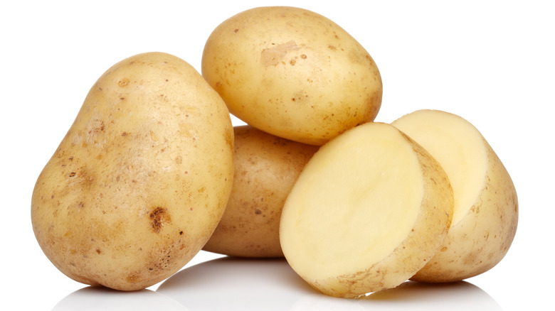

Simple Potato Variation

An easy to make dish called "Simple Potato Variation"
Simple Potato Variation is a dish beloved around the world because it uses
potatoes
You can not use not potatoes to prepare this dish
Ingredients:
- Potatoes
- (optional) Knife to cut potatoes
- If you can you can karate chop them instead of using the knife
Steps
-
Pray to god that you will have some potatoes by morning because you
forgot to buy some today when you came form work
- The prayers did not work
- Buy some potatoes and chop them like in the image above